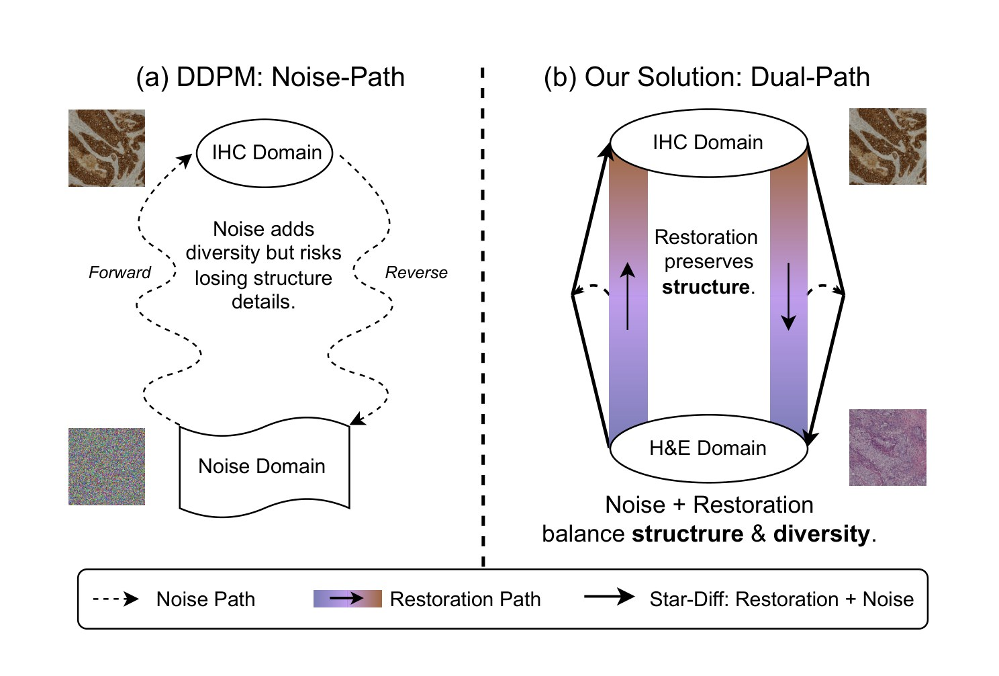
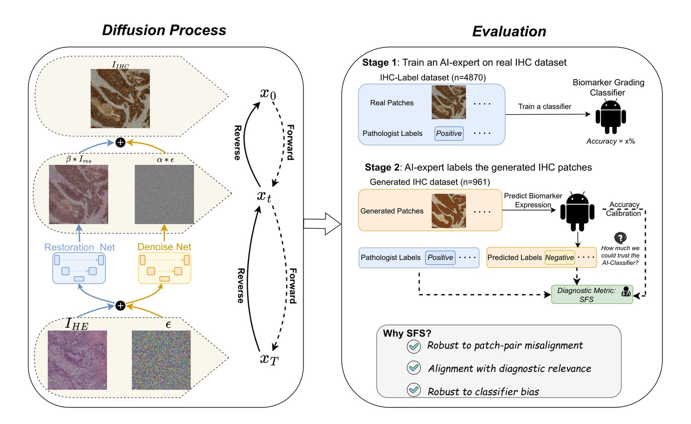
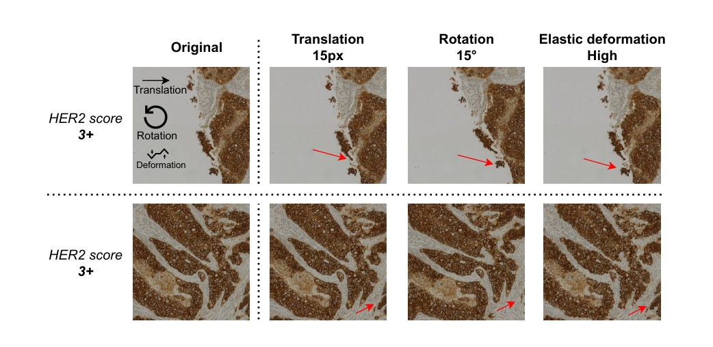
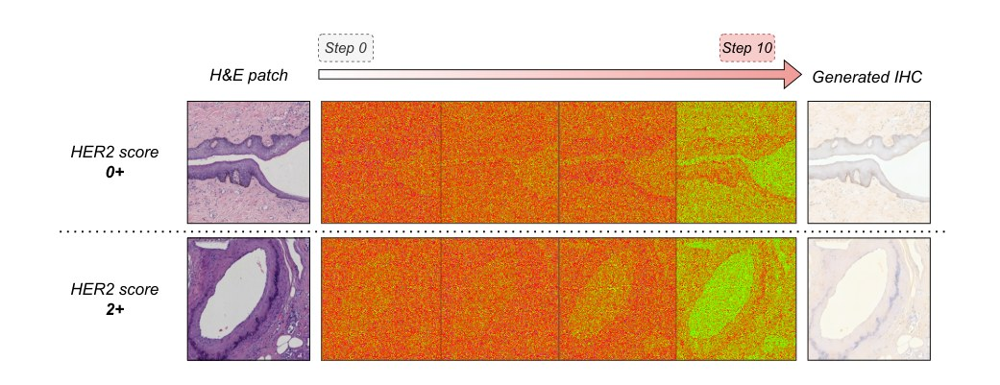
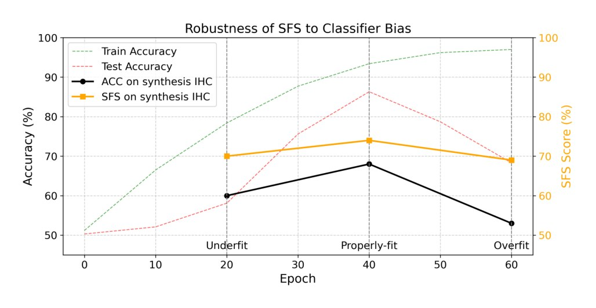

Star-Diffusion：面向复染虚拟染色的扩散方法——论文深度解读
论文：From Pixels to Pathology: Restoration Diffusion for Diagnostic-Consistent Virtual IHC 作者：Jingsong Liu, Xiaofeng Deng, Han Li, Azar Kazemi, Christian Grashei, Gesa Wilkens, Xin You, Tanja Groll, Nassir Navab, Carolin Mogler, Peter J. Schüffler*（慕尼黑工业大学病理研究所 / CAMP / MCML / MDSI 等） 发表：arXiv:2508.02528v1 [eess.IV]，2025-08-04；Preprint submitted to Elsevier 方法名：Star-Diff（Staining restoration Diffusion），配套指标 SFS（Semantic Fidelity Score） 关键词：Virtual Staining, Breast Cancer, Diffusion Model, Staining Restoration
0. 一句话概括
前人的 H&E→IHC 虚拟染色都把它当成图像翻译（translation）问题——只保留一条噪声路径，靠扩散的随机性去"变"出 IHC。Star-Diff 则把它重构成图像复原（restoration）问题：额外加一条确定性的"复原路径"，把 H&E 直接推向 IHC 的结构，噪声路径只负责提供生物变异性。两条路径一确定一随机，结构与多样性之间的权衡第一次变得可调。 同时它指出：H&E 和 IHC 是不同深度的连续切片，像素级本来就对不上，用 SSIM/PSNR 评价是在奖励错位。于是提出 SFS——一个基于"AI 病理专家分类结果"的指标，在错位和分类器偏置下都保持稳定。
一句话记住这篇的两个动作：给扩散加一条确定性路径（生成侧），用分类任务替代像素比较（评价侧）。
1. 命名澄清
先避免混淆。这篇论文里有两套名字，容易记串：
| 名字 | 是什么 | 容易混淆的对象 |
|---|---|---|
| Star-Diff | 本文的生成模型（双路径扩散） | 与 RDDM（Residual Denoising Diffusion Models, CVPR 2024）关系密切——Star-Diff 的残差/复原思想源自 RDDM 框架，本文把它迁移并改造到染色任务上 |
| SFS | 本文的评价指标（Semantic Fidelity Score） | 与 SSIM 名字长得像但完全是两回事：SSIM 是像素级结构相似度，SFS 是诊断语义级指标 |
| vIHC | virtual IHC，虚拟生成的 IHC 图 | 不是数据集，是"虚拟 IHC 图像"的统称 |
| BCI | Breast Cancer Immunohistochemical 数据集 | 是数据集的缩写，不是方法 |
另外提醒一点：这篇论文标题里写的是 "Diagnostic-Consistent"（诊断一致），不是 "Diagnostic-Accurate"。用词很克制——它主张的是生成结果与真实切片在诊断分级上一致，而不是断言生成图像在医学上完全正确。这个措辞值得注意。
2. 背景：为什么这件事值得做
- H&E 染色是临床诊断的金标准，能看清细胞形态与组织架构，但它看不见分子信息——HER2 表达水平、Ki67 增殖指数这些，在 H&E 上人眼就是看不出来。
- IHC（免疫组化）用抗体特异性地把目标蛋白染出来，是 HER2 分级、靶向治疗决策的依据。但它贵、慢、耗组织，而且在资源有限或时间紧迫的场景（比如术中冰冻切片）里根本来不及做。
- 于是有了 虚拟染色：直接从常规 H&E 推断出 IHC，零额外染色成本、秒级出图。
一个关键的合理性前提：已有研究证明 H&E 的形态学特征与分子谱存在统计相关性——Farahmand 等人用 CNN 仅凭 H&E 就能估计 HER2 分级，Akbarnejad 等人用 ViT 预测 ER/PR/Ki-67 的 AUC 接近 0.90。既然 H&E 里"藏着"分子信息，用生成模型把它显式地画出来就是可行的。
3. 前人工作，以及它们各自卡在哪
作者把染色翻译分成三条技术路线，每一条都讲清了"怎么做的"和"卡在哪"：
| 路线 | 代表方法 | 怎么做 | 卡在哪 |
|---|---|---|---|
| ① 颜色映射派 | Reinhard（LAB 空间均值/方差迁移）、Macenko（SVD 估染色矩阵）、Vahadane（NMF 分解染色） | 把染色转换当作颜色空间的统计分布对齐 | 只能处理线性可分的颜色差异。IHC 这种抗原特异性染色是非线性的——DAB 只在特定蛋白表达处出现，颜色映射根本无从下手，会漏掉或扭曲关键病理特征 |
| ② 非配对派 | CycleGAN 及其变体（PC-StainGAN 加结构相似约束、ROIGAN 做区域级监督、辅以分割网络） | 用两个生成器 + 两个判别器学双向映射，靠 cycle consistency 保内容 | 继承 CycleGAN 的通病：训练不稳、模式坍塌、细节保持差。而且非配对本身就意味着没有像素级对齐约束，解剖一致性难以保证 |
| ③ 配对派 | Pix2Pix（条件 GAN）、Pix2Pix-Pyramid（多尺度金字塔损失）、BCI-Stainer（加 biomarker 分类辅助任务）、PST-Diff（扩散 + 病理/结构约束） | 用配对数据做强监督，精度更高 | 依赖严格像素级监督——但 H&E 和 IHC 是不同深度的连续切片，像素级根本对不准，强监督反而会惩罚正确的生成 |
作者的判断：两条共同的空白
在梳理完这三条路线后，作者点出所有前人工作都有两个没被显式解决的问题：
- 没有显式处理"结构保持 vs 变异建模"这对矛盾。 生成图要和 H&E 空间对应（保结构），但过度强调结构保真又会抹掉生物标记的异质性（丢多样性）。前人的做法是把两者揉进一个损失里，没有把这对矛盾显式地参数化。
- 评价方式不反映临床效用。 SSIM、PSNR 这类像素级指标，在存在固有错位的情况下，衡量的是错位程度，而不是生成质量。
这两个空白，正好对应本文的两个贡献。
4. 本文要解决什么
用双路径扩散（确定性复原 + 随机噪声）显式建模"结构—多样性"权衡；用基于分类任务的 SFS 替代像素级指标，在错位下依然稳定。
5. 方法（重点，公式逐个拆）
5.1 先看一张图，理解问题出在哪

图注中文翻译：染色翻译范式对比。左：标准 DDPM 只有噪声路径，在"噪声域"和"IHC 域"之间往返，噪声加了多样性却可能丢结构。右：Star-Diff 在 H&E 域和 IHC 域之间多接了一条粗实线——复原路径，同时保留噪声路径，两者叠加。
这张图是全文的核心直觉，值得多看两眼。 左图的虚线（噪声路径）从 H&E 域出发，先"化成一团噪声"再到 IHC 域——中间必须经过一个信息全毁的状态。右图的实线（复原路径）则直接从 H&E 域指向 IHC 域，不经过噪声。作者的意思是：
既然 H&E 和 IHC 是同一块组织的两种染色，那它们之间本来就存在一个确定性的结构对应关系。让模型从纯噪声里"重新想象"出这个结构，是在浪费已知信息。
5.2 符号表
先统一符号，后面公式会反复用到：
| 符号 | 含义 |
|---|---|
| $I_{he}$ | 输入的 H&E 图像 |
| $I_{ihc}$ | 目标 IHC 图像 |
| $x_0$ | 目标图像（即 $x_0 \in I_{ihc}$） |
| $x_T$ | 纯高斯噪声，$x_T \sim \mathcal{N}(0, I)$ |
| $t$ | 时间步，$t = 1, \dots, T$ |
| $\alpha_t$ | 预定义的噪声调度系数 |
| $\bar{\alpha}_t$ | 累积乘积，$\bar{\alpha}_t = \prod_{s=1}^{t} \alpha_s$ |
| $\epsilon$ | 标准高斯噪声，$\epsilon \sim \mathcal{N}(0, I)$ |
| $I_{res}$ | 复原图（残差），$I_{ihc} - I_{he}$ |
| $\bar{\beta}_t$ | 预定义的复原调度（确定性结构引导的强度） |
| $r_\theta$ | 复原预测网络，估计 H&E→IHC 的残差 |
| $\epsilon_\theta$ | 噪声预测网络，建模生物标记变异性 |
| $\gamma_t$ | 确定性结构引导的平衡权重 |
| $\eta_t$ | 噪声修正带来的变异性的平衡权重 |
| $C$ | biomarker 类别数 |
| $R_c^{real}, R_c^{gen}$ | 真实图 / 生成图在第 $c$ 类的召回率 |
5.3 先复述标准扩散（式 1–2）
问题定义：学习映射 $f: \mathcal{X}_{he} \to \mathcal{X}_{ihc}$。在条件扩散框架下，这被解释为"逆转一个加噪过程"。前向过程是一个马尔可夫链：
$$q(x_t \mid x_{t-1}) = \mathcal{N}\left(x_t;\ \sqrt{\alpha_t}\,x_{t-1},\ (1-\alpha_t)I\right) \tag{1}$$
- $\alpha_t$ 是预定义的噪声调度
- 说人话：每一步往图像里掺一点高斯噪声，掺 $T$ 步之后图像变成纯噪声
式 (1) 有闭式解，可以直接跳到任意 $t$：
$$x_t = \sqrt{\bar{\alpha}_t}\,x_0 + \sqrt{1-\bar{\alpha}_t}\,\epsilon \tag{2}$$
- $\bar{\alpha}_t = \prod_{s=1}^{t}\alpha_s$ 是噪声调度系数的累积乘积
- $\epsilon \sim \mathcal{N}(0, I)$ 是标准高斯噪声
- 说人话：$t$ 时刻的图像 = 原图乘一个衰减系数 + 噪声乘一个放大系数。$\bar{\alpha}_t$ 越小，原图信号越弱、噪声越强
- 为什么要它：训练时不必真的跑 $t$ 步加噪，直接采样一个 $t$ 就能得到 $x_t$，这是扩散模型能训起来的关键
生成任务就变成学习以 H&E 为条件的反向过程 $p_\theta(x_{t-1} \mid x_t, I_{he})$。
到这里为止，全是标准 DDPM。作者的改动从下一行开始。
5.4 关键改动：加入复原路径（式 3–4）
第一步，定义"复原图"（残差）：
$$I_{res} = I_{ihc} - I_{he} \tag{3}$$
- 说人话：$I_{res}$ 就是"从 H&E 变成 IHC 需要补上的那部分差异"
- 为什么这么定义：这是整篇文章的支点。H&E 和 IHC 共享同一块组织的结构，所以绝大部分内容是重合的，真正需要"生成"的只是染色差异那一小部分。把任务从"从零生成 IHC"改成"预测这个差异"，难度和方差都会大幅下降
第二步，把复原项塞进加噪公式：
$$x_t = x_0 + \bar{\alpha}_t\,\epsilon + \bar{\beta}_t I_{res} \tag{4}$$
对比式 (2)，这里有两个重要变化：
| 标准 DDPM（式 2） | Star-Diff（式 4） | |
|---|---|---|
| 原图项 | $\sqrt{\bar{\alpha}_t}\,x_0$（会衰减） | $x_0$（不衰减，恒为 1） |
| 噪声项 | $\sqrt{1-\bar{\alpha}_t}\,\epsilon$ | $\bar{\alpha}_t\,\epsilon$ |
| 额外项 | 无 | $+\ \bar{\beta}_t I_{res}$ ← 新增的复原路径 |
- $\bar{\beta}_t$ 是预定义的复原调度，控制"确定性结构引导"的强度
- 说人话：$x_t$ 由三部分组成——原图（不衰减） + 噪声（强度由 $\bar{\alpha}_t$ 控制） + 复原残差（强度由 $\bar{\beta}_t$ 控制）
- 为什么原图项不再衰减：因为任务变了。标准扩散是"从纯噪声造图"，所以原图信息必须逐步销毁；Star-Diff 是"从 H&E 复原 IHC"，原图信息必须始终保留——这正是"复原"和"翻译"的分水岭
这一项 $\bar{\beta}_t I_{res}$ 就是全文的"缺的那一项"。 前人公式里没有它，所以模型只能靠噪声路径去"猜"结构；加上它之后，结构由确定性路径负责，噪声只负责变异。
5.5 两个网络并行训练
对应式 (4) 的两个非平凡成分，模型有两个并行训练的网络：
- $r_\theta(x_t, t, I_{he})$ —— 复原预测网络，估计残差 $\hat{I}_{res}$
- $\epsilon_\theta(x_t, t, I_{he})$ —— 噪声预测网络，建模 biomarker 变异性
反向采样分布定义为：
$$p_\theta(x_{t-1} \mid x_t) := q_\sigma\left(x_{t-1} \mid x_t,\ \epsilon_\theta,\ r_\theta\right) \tag{5}$$
- $q_\sigma$ 是结合了复原引导与噪声估计的转移概率
- 说人话：反向过程同时听两个网络的建议，不是只听噪声网络
实际采样步骤：
$$x_{t-1} = x_t - \gamma_t\,r_\theta - \eta_t\,\epsilon_\theta \tag{6}$$
- $\gamma_t$：确定性结构引导（H&E–IHC 复原）的平衡权重
- $\eta_t$：学习到的噪声修正带来的变异性权重
- 说人话：每一步从 $x_t$ 里减去两样东西——复原网络预测的残差（把图像往 IHC 结构上拉）和噪声网络预测的噪声（提供随机性）。$\gamma_t$ 和 $\eta_t$ 就是那两个"旋钮"
- 为什么这是核心贡献：$\gamma_t$ 和 $\eta_t$ 让"保结构"和"要多样性"这对矛盾第一次变成了两个可独立调节的超参数。前人把两者揉在一个损失函数里，无法分开调
一个漂亮的验证性设计：
当 $\gamma_t = 0$（关掉复原引导）时，整个框架退化为标准 DDPM。
这句话很重要——它说明 Star-Diff 不是另起炉灶，而是标准扩散的一个严格超集。标准 DDPM 是它在 $\gamma_t=0$ 处的特例。这种"包含关系"是审稿人喜欢的性质，也让消融实验更干净。
5.6 评价侧：SFS（式 7–10）
作者的第二个贡献。逻辑是一个两阶段的"AI 病理专家"流程：
Stage 1：在真实 IHC 数据上训练一个分类器（ResNet 主干），让它学会从 IHC 图块预测 biomarker 表达 —— 这就是"AI 专家"。 Stage 2：把这个专家用到生成的 IHC 上，看它给出的标签和病理医生的标签差多少。
形式化：对每个类别 $c$，分别算真实图与生成图上的召回率：
$$R_c^{real} = \frac{TP_c^{real}}{N_c}, \qquad R_c^{gen} = \frac{TP_c^{gen}}{N_c} \tag{7,8}$$
- $C$ 是 biomarker 类别数，$c \in \{1,\dots,C\}$
- $TP_c$ 是被正确分类为 $c$ 的数量，$N_c$ 是真值为 $c$ 的样本总数
- 说人话：在"真值确实是 $c$ 类"的样本里，分类器认对了多少
平均语义退化（真实与生成之间掉多少）：
$$\mathrm{AvgDeg} = \frac{1}{C}\sum_{c=1}^{C}\left(R_c^{real} - R_c^{gen}\right) \tag{9}$$
- 说人话：逐类算召回率的落差，再平均。注意是逐类——这样某一类（比如罕见的 3+）崩了不会被其他类的良好表现掩盖
最终指标：
$$\mathrm{SFS} = \frac{\mathrm{Acc}_{gen} + (1 - \mathrm{AvgDeg})}{2} \tag{10}$$
- $\mathrm{Acc}_{gen}$ 是生成图上的整体分类准确率
- 取值 0–1，越高越好
- 说人话：SFS 由两部分平均而成——整体准确率（生成图能不能被认对）+ 1 减平均退化（相比真实图掉了多少）。前者衡量绝对水平，后者衡量相对损失
- 为什么要两项：只看 $\mathrm{Acc}_{gen}$ 会被分类器本身的强弱带偏；只看 $\mathrm{AvgDeg}$ 又不知道绝对水平。平均起来既有绝对参考又有相对校准——这正是"calibrated"（校准）的含义
为什么 SFS 抗错位： 分类器看的是图块整体的语义内容，空间平移几个像素、转几度，只要细胞形态还在，分类结果就不变。而 SSIM 是逐像素比较，动一个像素就掉一大截。这是两种指标的根本区别。

图注中文翻译：左侧是扩散过程——$I_{HE}$ 与噪声 $\epsilon$ 分别经 Restoration Net 和 Denoise Net，按 $\beta * I_{res}$ 与 $\alpha * \epsilon$ 的权重相加得到 $x_t$，再反向去噪。右侧是评估流程——Stage 1 在 4870 个真实 IHC 图块上训练分类器，Stage 2 用它给 961 个生成图块打标签，通过 Accuracy Calibration 得到 SFS。右下角三句话总结了 SFS 的三个性质：抗图块对错位、与诊断相关性对齐、抗分类器偏置。
6. 实验
6.1 实验设置
| 项目 | 内容 |
|---|---|
| 数据集 | BCI Challenge Dataset（Breast Cancer Immunohistochemical） |
| 规模 | 4,870 对 H&E / HER2 染色图块，来自 51 对 WSI |
| 标签 | HER2 表达分级 0, 1+, 2+, 3+（切片级标注——同一张切片内的图块标签可能有差异） |
| 划分 | 按 BCI 挑战赛协议；训练集再按 80% / 20% 分训练与验证 |
| 对齐情况 | H&E 与 IHC 切片仅在切片级配准，未做像素级配准 → 存在固有空间错位 |
| SFS 分类器 | ResNet 主干，在 IHC 图块上训练，测试集准确率 >86%；HER2 分级二值化为阳性（2+, 3+）/ 阴性（0, 1+） |
| 硬件 | NVIDIA GeForce RTX 3090 |
| 重复 | 扩散模型均做 3 次独立采样，报告 mean ± std |
6.2 SOTA 横向对比（Table 1）
这是一个"横向对比"类型的实验：把所有主流路线拉到同一个数据集上比。
| 方法 | PSNR (dB) ↑ | SSIM ↑ | 质量排名 ↓ | Accuracy ↑ | SFS ↑ |
|---|---|---|---|---|---|
| 颜色映射派 | |||||
| Reinhard | 15.34 | 0.44 | 8th | 0.60 | 0.65 |
| Macenko | 15.49 | 0.41 | 6th | 0.57 | 0.63 |
| Vahadane | 15.04 | 0.35 | 9th | 0.59 | 0.67 |
| 非配对派 | |||||
| CycleGAN | 16.20 | 0.37 | 7th | 0.59 | 0.65 |
| 配对派 | |||||
| Pix2Pix* | 19.63 | 0.42 | 4th | 0.60 | 0.67 |
| Pix2Pix-Pyramid* | 21.61 | 0.48 | 2nd | 0.61 | 0.69 |
| Palette | 17.13 ± 0.53 | 0.53 ± 0.08 | 3rd | 0.62 ± 0.05 | 0.69 ± 0.03 |
| PST-Diff† | 16.75 ± 4.20 | 0.38 ± 0.11 | 5th | - | - |
| Star-Diff（本文） | 21.30 ± 0.01 | 0.53 ± 0.00 | 1st | 0.68 ± 0.02 | 0.74 ± 0.01 |
质量排名公式：0.6 × SSIM 排名 + 0.4 × PSNR 排名。表中带 * 的方法，指标取自 [20]；带 † 的取自 [10]。
结果解读（几个值得注意的点）：
- 诊断指标上的优势比图像指标更大。 Star-Diff 的 PSNR 21.30 略低于 Pix2Pix-Pyramid 的 21.61，但 Accuracy（0.68 vs 0.61）和 SFS（0.74 vs 0.69）都明显领先——超过第二名 5% 以上。作者据此论证：图像质量指标高 ≠ 诊断价值高，这正是他们提出 SFS 的理由。
- 方差是另一个卖点。 看 PST-Diff 的
16.75 ± 4.20——标准差高达 4.2 dB，说明扩散模型在这个任务上极不稳定。而 Star-Diff 是21.30 ± 0.01，方差几乎为零。作者把这一点归功于复原路径提供的确定性引导。对一个要上临床的方法来说，"稳定"比"偶尔很好"重要得多。
- 扩散 > GAN 的证据。 Palette（扩散）在诊断指标上超过 Pix2Pix-Pyramid（GAN）：Acc 0.621 vs 0.610，SFS 0.688 vs 0.687。虽然差距很小，但方向一致。
- 颜色映射派垫底。 三个颜色映射方法 PSNR 全在 15 上下，排名 6–9 位——印证了 Related Work 里的判断：非线性染色关系不是颜色空间对齐能解决的。
6.3 扰动鲁棒性分析（Table 2）
这是一个"鲁棒性"实验：人为给 IHC 图块施加空间扰动，看各指标掉多少。它同时验证了两件事——SFS 的抗错位性，以及"像素指标在错位下不可用"。
基线（未扰动的同一对 IHC）：SSIM 1.00、PSNR ∞、Accuracy 0.87、SFS 0.94
| 扰动类型 | SSIM | PSNR (dB) | Accuracy | SFS | SSIM 跌幅 | Accuracy 跌幅 | SFS 跌幅 |
|---|---|---|---|---|---|---|---|
| 平移 5px | 0.52 | 25.13 | 0.86 | 0.93 | 47.9% | 1.1% | 1.0% |
| 平移 10px | 0.49 | 24.16 | 0.86 | 0.93 | 51.0% | 1.1% | 1.0% |
| 平移 15px | 0.49 | 23.66 | 0.86 | 0.93 | 51.4% | 1.1% | 1.0% |
| 旋转 5° | 0.49 | 23.13 | 0.86 | 0.93 | 51.1% | 1.1% | 1.0% |
| 旋转 10° | 0.49 | 22.72 | 0.86 | 0.93 | 51.4% | 1.1% | 1.0% |
| 旋转 15° | 0.48 | 22.53 | 0.86 | 0.94 | 51.9% | 1.1% | 0.0% |
| 弹性形变 低 | 0.82 | 31.05 | 0.85 | 0.93 | 18.0% | 2.3% | 1.0% |
| 弹性形变 中 | 0.67 | 27.64 | 0.85 | 0.93 | 33.5% | 2.3% | 1.3% |
| 弹性形变 高 | 0.59 | 26.25 | 0.84 | 0.92 | 41.2% | 3.4% | 2.1% |
这是全文最有说服力的一组数字。
- 仅平移 5 个像素，SSIM 就掉了 47.9%——从 1.00 掉到 0.52。而现实中 H&E 与 IHC 是不同深度的切片，错位远超 5 像素。这意味着：用 SSIM 评价虚拟染色，测的几乎全是错位，不是质量。
- 同一扰动下，SFS 只掉 1.0%。 Accuracy 也只掉 1.1%。
- 即使在高强度弹性形变下（SSIM 掉了 41.2%），Accuracy 只掉 3.4%、SFS 只掉 2.1%。
结论：像素级指标对空间错位极度敏感，语义级指标几乎免疫。 这不是修辞，是表里可查的数字。

图注中文翻译：红箭头标出同一处组织结构在四种条件下的位置。可以直观看到——图的"结构对齐"被破坏了（所以 SSIM 暴跌），但"这是 HER2 3+ 的乳腺癌组织"这个语义完全没变（所以 SFS 几乎不动）。这张图就是 Table 2 的视觉版。
6.4 消融实验（Table 3）
这是一个"消融"实验：分别关掉两条路径，看各自贡献。
| 复原路径 | 去噪路径 | SSIM | PSNR (dB) | Accuracy | SFS |
|---|---|---|---|---|---|
| ✓ | ✓ | 0.53 | 21.30 | 0.68 | 0.74 |
| ✓ | ✗ | 0.30 (↓0.23) | 17.46 (↓3.84) | 0.62 (↓0.06) | 0.68 (↓0.06) |
| ✗ | ✓ | 0.39 (↓0.14) | 15.77 (↓5.53) | 0.64 (↓0.04) | 0.68 (↓0.06) |
这张表是方法论的直接证据：
- 只用复原路径（关掉噪声）：SSIM 0.30、PSNR 17.46 —— 结构能对上一些，但整体质量很差
- 只用噪声路径（关掉复原，即退回标准 DDPM）：SSIM 0.39、PSNR 15.77 —— 更差，而且 PSNR 掉得最狠（↓5.53）
- 两者都要：SSIM 0.53、PSNR 21.30 —— 全面最好
两条路径是互补的，缺一不可。 值得注意的是：单用噪声路径（也就是所有前人扩散方法的做法）是三种配置里最差的。这直接支撑了论文的核心主张——前人少了复原这一项，不是小修小补，而是差了一个关键成分。
6.5 可解释性分析（Figure 3）
这是一个"定性可视化"实验：用 RISE 显著性方法，看模型在生成过程中"注意力"落在哪里。

图注中文翻译：热图展示模型在不同去噪步关注的位置。注意 0+ 与 2+ 两行的热区分布明显不同——说明模型确实在根据 biomarker 状态调整关注区域，而不是对所有输入一视同仁。随着步数推进，高响应区逐渐收敛到腺体/细胞密集的诊断相关区域。
作者想说明的是： 模型不是在做简单的颜色映射，而是在生成过程中持续关注诊断相关的组织区域，且关注模式随 biomarker 分级变化。这为"生成结果具有诊断意义"提供了一个机制层面的旁证。
6.6 SFS 对分类器偏置的鲁棒性（Figure 4）
这是一个"鲁棒性"实验，针对 SFS 自身的一个软肋：如果"AI 专家"本身不靠谱，SFS 还可信吗？
作者训练了三种状态的分类器（共 60 个 epoch）：
- 欠拟合（Epoch 20）：训练集和测试集准确率都低
- 恰当拟合（Epoch 40）：两者都高，泛化良好
- 过拟合（Epoch 60）：训练集接近满分，测试集开始掉

图注中文翻译：随着训练推进，训练准确率一路爬升到接近 100%（过拟合信号），测试准确率在 epoch 40 达到峰值 86% 后开始下滑。关键在两条实线：ACC 随分类器质量同步起落（60 → 68 → 53），而 SFS 相对平稳（70 → 74 → 69）。
结果： Accuracy 会随分类器状态剧烈波动，而 SFS 保持相对稳定。
为什么这重要： 它说明 SFS 内置的 (1 - AvgDeg) 那一项起到了校准作用——当分类器变差时，真实图和生成图上的表现会同步下降，相减之后部分抵消。这就是论文反复强调的 "calibrated with class-wise performance degradation" 的实际含义。
7. 讨论与局限
7.1 作者主张的临床价值
- 速度：生成 IHC 只需数秒，而传统 IHC 染色要数小时。作者特别强调术中冰冻切片场景——传统 IHC 在术中根本来不及做，虚拟染色可以即时给出分子层面的参考。
- 可扩展性：框架不限于 HER2，可扩展到其他染色目标（如 H&E→CD10、H&E→PAS）。
- 可迁移性：作者认为 SFS 这种"任务驱动评价"的思路可推广到病理之外的医学图像生成（如放射影像合成、生物结构生成）。
- 榜单成绩：Star-Diff 在 BCI 挑战赛榜单上排名第一。
7.2 作者自己承认的局限（照实写）
- SFS 依赖预训练分类器，且需要图块级标注。 这是一个循环依赖：用一个模型去评价另一个模型的输出，前者的偏差会传导。作者的应对是开源分类器权重，让社区不必重训；并计划未来用基础模型（foundation model）替代，以减少标注依赖、提升泛化性。
- 只有一个公开配对数据集。 写作时公开的配对 H&E–IHC 图块数据集只有 BCI 一个，因此泛化性验证受限。作者正在构建内部配对数据集来做进一步验证和横向对标。
7.3 我读下来觉得还应该补充的几点
以下是我自己的判断，不是论文原文。
- "诊断一致"的验证强度有限。 SFS 的核心是一个二值化的 HER2 分类器（阳性/阴性）。但临床 HER2 分级是 0/1+/2+/3+ 四档，其中 2+ 恰恰是最需要 FISH 复检的灰色地带。把四档压成两档，会掩盖中间档位的错误——模型把 1+ 生成成 2+，在二值化后都算"阴性"，SFS 看不出问题。
- 切片级标签带来的隐患。 论文明确说明 HER2 标注是切片级的，而图块级标签"可能存在切片内差异"。这意味着 SFS 的
N_c分母本身带有噪声。作者没有量化这个噪声的影响。 - 没有与病理医生的盲评对照。 SFS 用"AI 专家"代理病理医生，但论文没有给出 AI 分级与真实病理医生分级的一致性（如 Cohen's κ）。这是"AI 代理是否可信"这个链条上缺失的一环。
- "秒级推理"缺少具体数字。 摘要和讨论都强调"rapid inference""within seconds"，但正文没有给出单张图块的实测推理时间或与基线方法的效率对比。对术中场景而言，这个数字是关键卖点，理应有量化。
8. 这篇论文对本课题的启示
结合本课题「PSPStain baseline + 扩散化 + 解耦」这条线，以下列出几个直接相关的点。
① 它是我此前推荐的第一复现对象，理由是"结构—随机性解耦"最干净。 Star-Diff 把生成过程显式劈成确定性路径（结构）与随机路径（变异），而且用 $\gamma_t, \eta_t$ 两个权重把权衡参数化。这与本课题想要的「structure ↔ stain-expression 解耦」方向一致但层次不同——它解耦的是"结构 vs 随机性"，不是"结构 vs 蛋白表达"。所以它是一个很好的起点，但不是终点：可以在这条确定性路径上，把 PSPStain 的 FOD/PCLS 作为额外约束挂上去。
② 它天然满足"保留原有两个 loss"的诉求。 因为 Star-Diff 是标准扩散的严格超集（$\gamma_t=0$ 即退回 DDPM），它的训练框架与调研档案中讨论的"多损失共存"问题是同一套结构：噪声预测损失 + 复原损失 + 后续新增的 PALS/PCLS。第 5.5 节的"两个网络并行训练"就是现成的多损失架构。
③ 它的消融表提供了一个重要警示。 Table 3 显示：单用噪声路径（前人扩散的标准做法）是三种配置里最差的（PSNR 15.77）。若把 PSPStain 直接换成普通条件扩散而不加结构路径，很可能落在这个坑里。这说明"给扩散加确定性结构引导"不是可选项，而是必需的。
④ 关于黑团问题，这篇提供了一条线索。 生成图上曾出现的 2–3 处黑团，其成因之一（见伪影报告）是残差路径数值冲突——而 Star-Diff 的 $I_{res} = I_{ihc} - I_{he}$ 正是这个机制的来源。在 H&E 与 IHC 亮度差异极大的区域（密集深染细胞核区），$I_{res}$ 幅值会显著高于平均，若残差网络在该处失控就会局部崩塌。可验证的预测：黑团位置应与 H&E 上细胞密度最高、染色最深的区域重合。 若正在使用或计划使用 Star-Diff 式残差路径，建议先检查 $\bar{\beta}_t I_{res}$ 这一项的数值范围。
⑤ SFS 值得直接拿来用，但要改造。 SFS 的"抗错位"性质，恰好解决了评价体系里的一个痛点（H&E 与 IHC 本就不对齐，PSNR 不可信）。但它有两个地方需要针对本任务调整：(a) 本课题关注的不是 HER2 二分类，而是 0/1+/2+/3+ 四档分级，甚至 Ki67 的连续表达比例——二值化会丢信息；(b) 建议补上 AI 分级与病理医生分级的 κ 一致性，否则"AI 代理"这个环节没有验证。这与调研档案 R2 报告中"四层评价"的第④层（临床效用）正好对接。
9. 附：公式速查表
| 式号 | 公式 | 作用 |
|---|---|---|
| (1) | $q(x_t \mid x_{t-1}) = \mathcal{N}(x_t; \sqrt{\alpha_t}x_{t-1}, (1-\alpha_t)I)$ | 标准前向加噪（马尔可夫链） |
| (2) | $x_t = \sqrt{\bar{\alpha}_t}x_0 + \sqrt{1-\bar{\alpha}_t}\epsilon$ | 前向过程闭式解，可跳步采样 |
| (3) | $I_{res} = I_{ihc} - I_{he}$ | 复原图（残差）定义 |
| (4) | $x_t = x_0 + \bar{\alpha}_t\epsilon + \bar{\beta}_t I_{res}$ | 核心：加噪公式里多出复原项 |
| (5) | $p_\theta(x_{t-1} \mid x_t) := q_\sigma(x_{t-1} \mid x_t, \epsilon_\theta, r_\theta)$ | 反向分布，同时用两个网络 |
| (6) | $x_{t-1} = x_t - \gamma_t r_\theta - \eta_t \epsilon_\theta$ | 实际采样步：减残差 + 减噪声 |
| (7) | $R_c^{real} = TP_c^{real}/N_c$ | 真实图逐类召回率 |
| (8) | $R_c^{gen} = TP_c^{gen}/N_c$ | 生成图逐类召回率 |
| (9) | $\mathrm{AvgDeg} = \frac{1}{C}\sum_c (R_c^{real} - R_c^{gen})$ | 平均语义退化 |
| (10) | $\mathrm{SFS} = \frac{\mathrm{Acc}_{gen} + (1-\mathrm{AvgDeg})}{2}$ | 语义保真度评分 |
最关键的两个公式：式 (4) 和式 (6)。 前者说明"多了一项什么"，后者说明"这一项怎么用"。其余都是标准扩散或指标定义。
10. 附：超参数与设置速查
| 项目 | 值 |
|---|---|
| 时间步 $T$ | 论文正文未给出具体数值（需查代码） |
| 平衡权重 $\gamma_t, \eta_t$ | 论文未给出具体调度形式（复现时的关键未知量） |
| 复原调度 $\bar{\beta}_t$ | 论文未给出具体形式 |
| 噪声调度 $\alpha_t$ | 沿用标准扩散调度 |
| 硬件 | NVIDIA GeForce RTX 3090 |
| 采样重复次数 | 3 次独立采样，报告 mean ± std |
| SFS 分类器 | ResNet 主干，测试准确率 >86%，HER2 二值化 |
| 质量排名公式 | 0.6 × SSIM 排名 + 0.4 × PSNR 排名 |
| 数据集 | BCI：4,870 对图块，51 对 WSI，切片级 HER2 标注 |
⚠️ 复现提醒：$\gamma_t$、$\eta_t$、$\bar{\beta}_t$ 这三个调度函数是方法的核心超参数，但正文只给了符号没给具体形式。这是复现时最大的不确定点——建议优先查阅官方/非官方代码实现（见下节）。
11. 资源
- 论文（arXiv）：https://arxiv.org/abs/2508.02528 ｜ HTML 版：https://arxiv.org/html/2508.02528v1
- 本地 PDF：
~/Desktop/Star-Diff.pdf - 数据集：BCI Challenge Dataset（Breast Cancer Immunohistochemical image generation），4,870 对图块 / 51 对 WSI
- 代码：论文未在正文给出官方仓库地址。已知社区有独立复现实现（MIT 许可），提供训练/采样/评估命令与 BCI 配置，但非官方，且复现结果与论文存在差距（详见本系列 R5 报告）
- 相关前作：
- RDDM（Residual Denoising Diffusion Models, CVPR 2024）—— Star-Diff 残差思想的来源
- PST-Diff（IEEE TMI 2024）—— 另一个扩散虚拟染色工作，本文的扩散基线
- Pix2Pix-Pyramid / BCI（CVPR 2022）—— BCI 数据集与金字塔 Pix2Pix 基线
- PSPStain（MICCAI 2024）—— 本课题的 baseline，同任务不同路线（非配对 + 病理语义约束）
本文是基于论文原文的深度解读，含作者观点与我的补充评论（第 7.3、8 节为我的判断，已明确标注）。原始论文版权归原作者所有（CC BY 4.0）。
← 返回论文精读